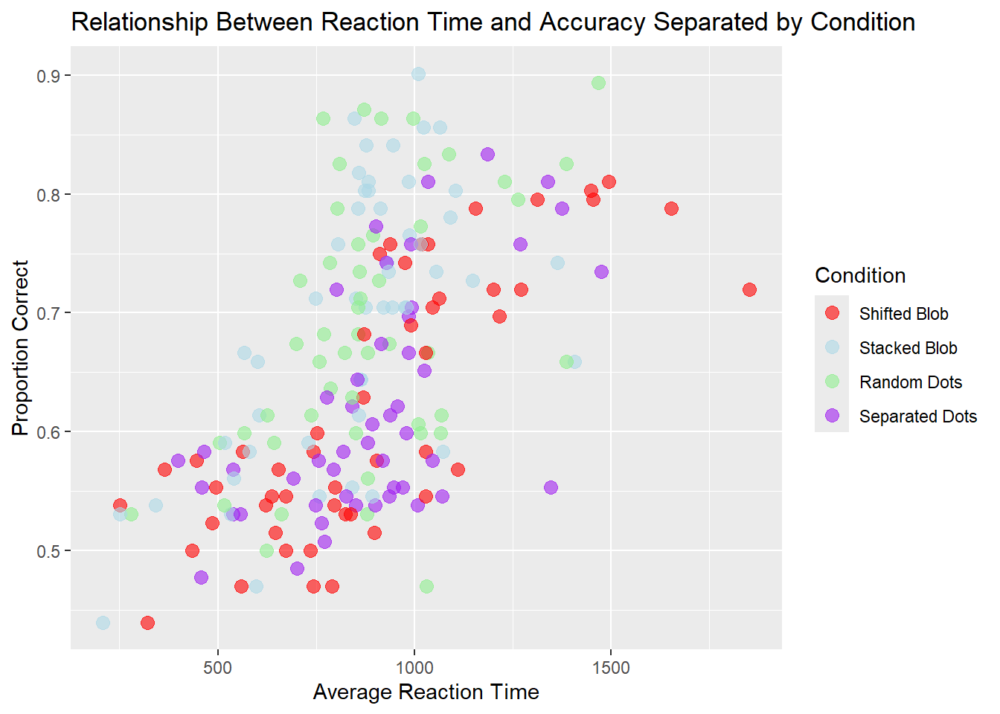

Proportional Reasoning Across Formats.
Vincent Espana 1
@vespana1
vincent.espana@rutgers.edu
1 Department of Cognitive Science, Rutgers University
Introduction
Comparing proportions is sometimes very hard! But, even infants seem to be able to do it a little bit. The purpose of this science project was to better understand how well people compare proportions when the proportions are presented in different formats. The purpose of this class assignment is to take the R-code and plots we’ve been generating over the last several weeks and put it all together into one poster format.
Research Objectives
- Does average performance vary across format type?
- Does average performance vary across numerator congruency status?
- Does numerator congruency vary across format type? (i.e., is there an interaction)
Participants
A total of 99 adults participated in the study.
Methods
First, participants were introduced to a story about how a magic ball and that the outcome (i.e.,blue or orange) depended on the proportions. They were then asked to compare the proportions of different images.
In other words, participants were shown two images of the same kind at the same time and asked to decide which image had a higher proportion of the shape (or dots) colored in blue.

Conditions
There were four different conditions that changed what kinds of images the participants saw.
- divided blob: blue and orange were entirely separate
- integrated blob: one blob, divided to be part blue and part orange
- separated dots: blue and orange dots were on opposite sides of the image
- integrated dots: blue and orange dots were intermixed

Results
- Does average performance vary across format type, ignoring all other aspets of the stimuli?
This plot compares how accurately participants performed under each condition. It shows that stacked blob, and random dots have a even distribution, while shifted blob clusters to at higher and lower accuracy and separated dots cluster at lower accuracy. The means of these condition show that no condition is more significant than another as the means are relatively similar.
- How are reaction time and accuracy related?
 As seen in this graph, there is a positive relationship between the average reaction time and the proportion correct. When looking at the conditions individually, shifted blob and separated dots cluster toward a lower reaction time and a lower accuracy and stacked blob and random dots cluster toward a higher accuracy and higher reaction time.
- How does numerator congruency interact with format type?
This graph compares the proportion correct per condition of congruent numerators and incongruent numerators. The graph shows that congruent proportions cluster towards a higher accuracy while the incongruent proportions have a high variability and a low mean accuracy.
Interpretation
Yes, average performance varies across format type, with stacked blob and random dots having a higher overall mean. However, as seen in the first graph, there is not a significant difference between them.
As seen in the third graph, congruent proportions have a higher overall mean and better variability than incongruent proportions, thus alluding to a significant distinction.
The third graph also suggests that there is an interaction, as the numerator congruency has variability across the different type. More specifically, congruency has the same trend across each condition, but the conditions seem to affect the mean of the incongruent proportions the most.
Conclusion
- What was the most annoying or hardest thing about the assignment?
The most annoying part of the assignment was resizing Figure 2 to fit the poster dimensions. I was using a different way to import it initially, but once I found a better syntax, I was able to finally resize to fit the paper.
- What was the most satisfying or fun thing about the assignment?
The most satisfying part of this assignment is seeing the final result as one cohesive poster. Even though I did not specifically format each part of it, it is interesting to see how our work can be implemented in a much better way than reformatting a Word document or Google doc. The possibilities for creating seem endless!